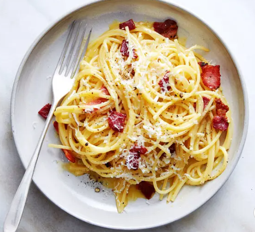

Carbonara

Description
Ingredients
- 400g (14 oz) spaghetti or your pasta of choice
- 4 large egg yolks (or 3 yolks and 1 whole egg for creamier texture)
- 100g (3.5 oz) Pecorino Romano cheese, finely grated (or Parmesan if preferred)
- 150g (5 oz) guanciale (cured pork cheek) or pancetta, diced
- Salt (for pasta water)
- Freshly ground black pepper
Steps
- Cook 400g pasta in salted water until al dente; reserve 1 cup of pasta water.
- Dice 150g guanciale or pancetta and cook in a pan until crispy.
- Whisk 4 egg yolks (or 3 yolks + 1 whole egg) with 100g grated Pecorino Romano and black pepper.
- Drain pasta and add to the pan with the cooked guanciale; toss to coat in fat.
- Remove pan from heat to cool slightly.
- Add egg mixture to the pasta, stirring quickly to create a creamy sauce.
- Gradually mix in reserved pasta water until desired consistency is reached.
- Add extra black pepper and adjust seasoning if needed.
- Plate the pasta and sprinkle with more Pecorino Romano.